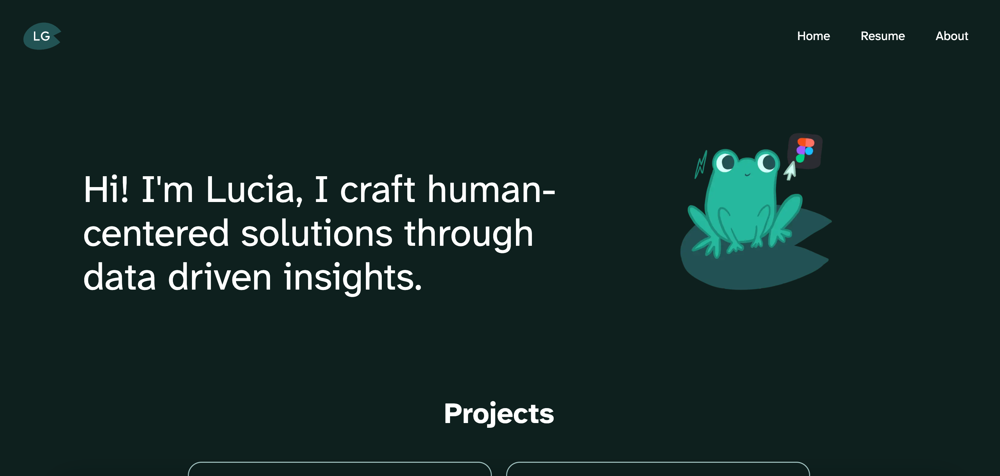
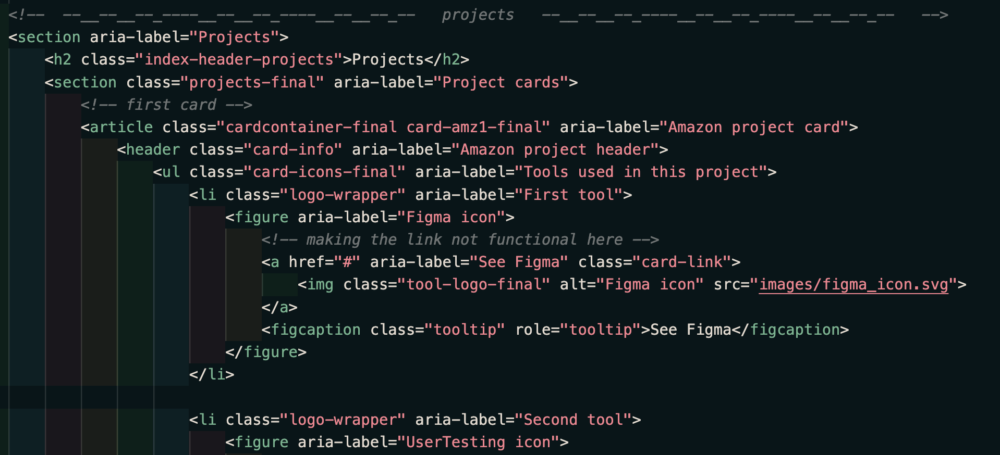
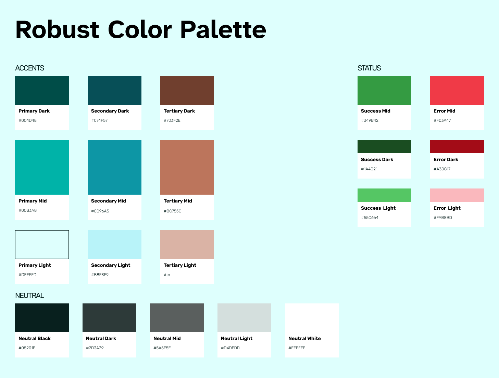
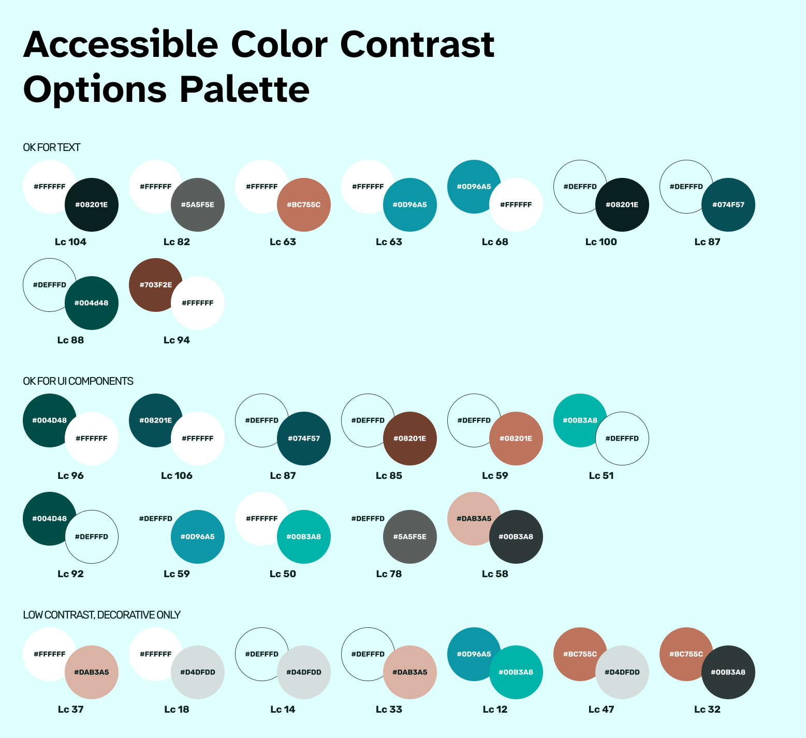
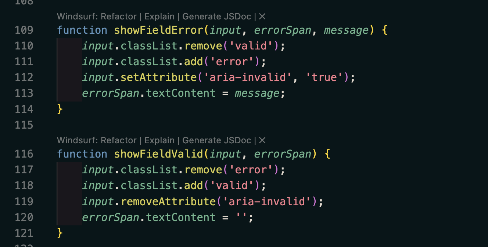
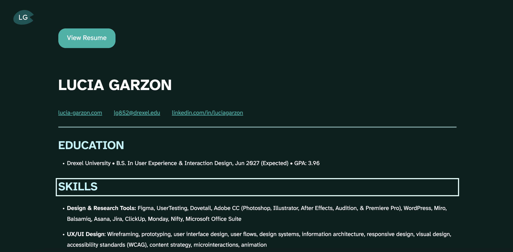

Accessible Portfolio Case Study
The Overview
This was a solo project involving the development of my professional portfolio, built specifically for my Scripting for Accessibility class. The site includes a home page with project cards, a resume page, and an "About" page with a fully functional contact form. My main focus was ensuring a "Robust" experience—making sure the design works seamlessly across different browsers and assistive technologies. This project allowed me to apply Inclusive design principles. I focused on manual testing with VoiceOver to ensure my "Skip to main content" links and ARIA landmarks improved the user experience.
The Context and Challenge
The project began as the final requirement for IDM380. My goal was to take three core pages and ensure they were functionally sound for everyone. I handled everything from the initial HTML structure to the final CSS styling.
The core problem I tackled was "exclusionary design." Many portfolios use non-semantic tags and fixed pixel sizes that break when a user zooms in. I wanted to prove that a modern aesthetic could coexist with strict accessibility standards.
One example was moving away from divs and focusing on semantic structure. By using the right tags, I ensured the site is readable for everyone, regardless of how they access the web.

I measured success through manual testing. Every interactive element is reachable via keyboard. I also accounted for special use cases like reduced motion, responsive typography (rem units), and dark mode preferences.
The Process and Insight
I started with a foundation of high legibility by choosing the Atkinson Hyperlegible font. I implemented this as a variable font to maintain performance while ensuring characters are easily distinguishable for users with low vision.
For the visual design of this project, I prioritized readability by creating a Robust Color Palette specifically tested for high accessibility standards. I moved away from purely aesthetic choices and instead focused on a color system that includes defined "Accents," "Status," and "Neutral" sections that remain legible for all users regardless of their color vision.

In addition, I utilized the APCA (Advanced Perceptual Contrast Algorithm) to refine my color palette, focusing on how the human eye actually perceives light and dark rather than just looking at simple ratios. I developed a specific "Accessible Color Contrast Options Palette" that accounts for font weight and size, ensuring that text remains readable across different backgrounds for all users.

After color, I used rem units for all spacing so the layout scales gracefully with browser font settings. I also coded a "Skip Navigation" link at the top of every page so keyboard users can bypass the menu and get straight to the content.
Testing with VoiceOver was the most insightful step. It helped me realize where I needed aria-labels—like on my social media icons—so the screen reader announces "LinkedIn icon" instead of just a generic link.
The Solution
The final three-page portfolio prioritizes the user. The home page uses a clear heading hierarchy so screen reader users can quickly scan project cards. The "Lilypad" logo is also clearly labeled for brand accessibility.
On the "About" page, I used `aria-invalid` and custom JavaScript error messages to make the contact form intuitive. I also added a "Discard" button that resets the form and provides clear audio/visual feedback.

Meanwhile, the resume page was designed to be much more than a static document. I used a clear heading structure so that someone using a screen reader can quickly jump between sections like "Work Experience" and "Education" without having to listen to the entire page.

In each page I also included a "Skip to top" link in the footer to help users with motor impairments return to the navigation without excessive scrolling.
The Results
This project passed a full walkthrough using only VoiceOver and a keyboard. All focus states are highly visible, ensuring keyboard users never lose their place. This proved that accessibility doesn't mean sacrificing style.
In fact, it means more users are able to interact with the website.
The biggest lesson was how much small details matter, like ARIA roles for dynamic content. Moving forward, I've learned that accessibility is a mindset you start with, not a feature you add at the end.